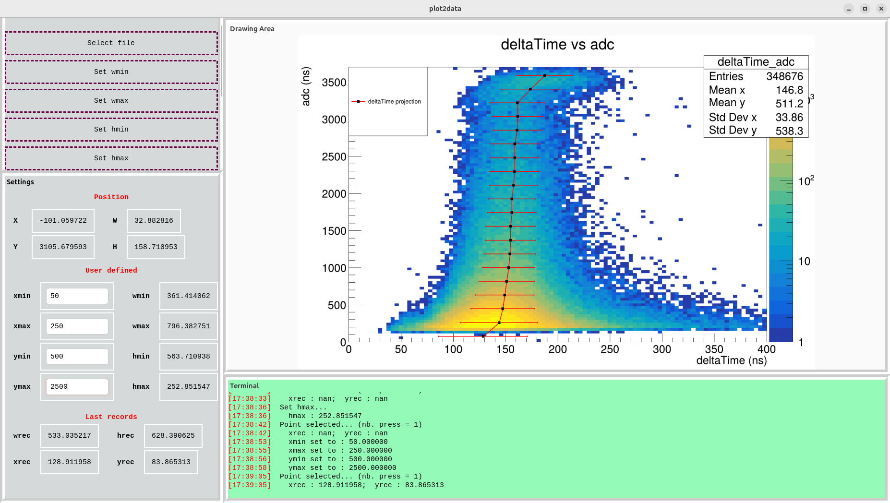

plot2data is working very well
Lognumber 50.
Submitted on Fri, 05 Sep 2025 - 17:47:04 CEST
Marker: software development
Send to:
Use :
0) Load an image. For the moment a default image will appear (I will request the user to select a image later... TO BE DONE).
1) Manually define xmin, xmax, win, wax (do not forget to press ENTER)
2) Set a point in the plot area. From this you can decide to save the width or the height as wmin, wmax, hmin, hmax by clicking the relevant buttons (Set wmin, Set wmax, Set hmin, Set hmax)
3) Everything is ready, move the mouse and look at Position. If one value in NaN or nan, verify that xmin, xmax, ymin or ymax are numbers and make sure to press ENTER after editing these values.
Attachments (1)
1.
